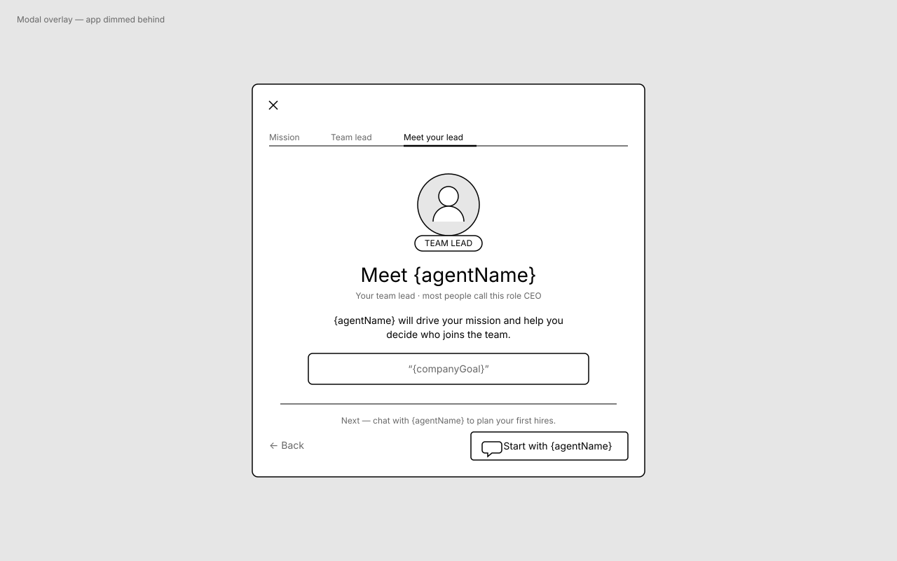
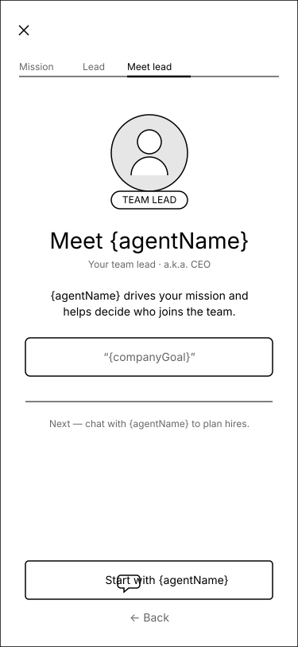
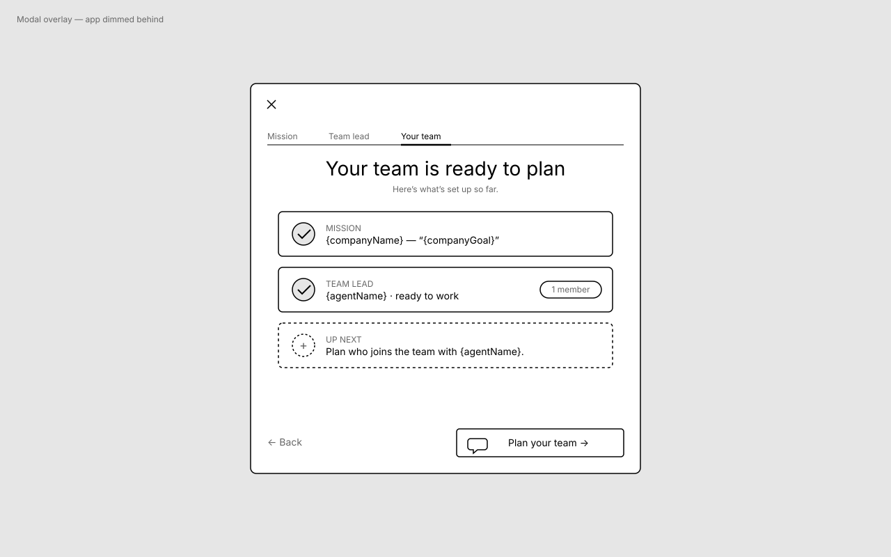
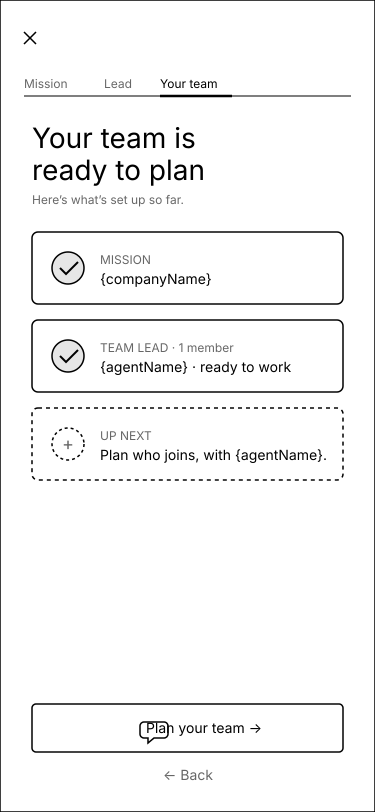
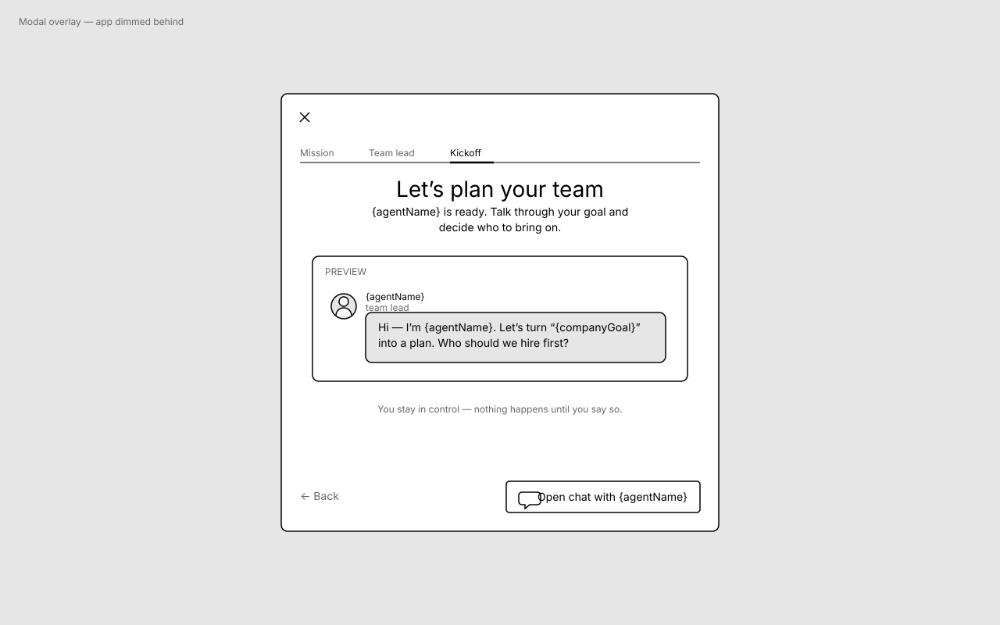
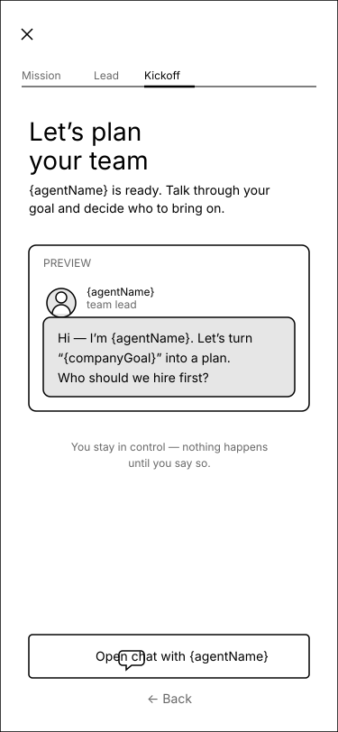
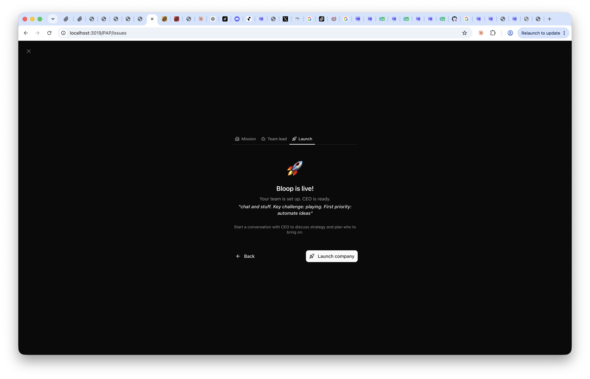

What’s wrong today & the bar for “fixed”
- “Launch” over-claims. You aren’t launching a company, and not even a team yet — just one agent. The tab label, headline (“is live!”), rocket icon, and CTA (“Launch company”) all imply a finish line that hasn’t been reached.
- It’s a doorway, not a destination. The very next step drops you into a chat with the lead to plan hiring. Framing should point forward into that conversation.
- Team-centric, inclusive nouns (carrying PAP-63 forward): “team” not “company”; “you” not “the board”; use the lead’s actual name; you direct agents, you stay in control.
- Iconography: replace the 🚀 rocket with people / chat / roster imagery that matches a team handoff.
- CTA: name the action and the lead — “Start with {agentName}”, “Plan your team”, “Open chat with {agentName}” — not “Launch company”.
Option A — Meet your team lead
Option B — Your team so far
Option C — Kickoff chat
Current screen
Open questions
Option A — “Meet your team lead”
Introduction-framed · hero on the one agent · avatar + chat iconography
Desktop

Mobile

Copy changes
| Before | After |
|---|---|
| Tab: Launch | Tab: Meet your lead |
| 🚀 {companyName} is live! | [avatar] Meet {agentName} |
| Your team is set up. {agentName} is ready. | Your team lead · most people call this role CEO |
| Start a conversation with {agentName}… | {agentName} will drive your mission and help you decide who joins the team. |
| Launch company | Start with {agentName} |
Why: Puts a face to the single agent you created and frames the moment as an introduction, not a launch. Strongest emotional “this is a teammate” read; lowest information density.
Option B — “Your team so far”
Recap-framed · traceable summary of what’s set up + what’s next
Desktop

Mobile

Copy changes
| Before | After |
|---|---|
| Tab: Launch | Tab: Your team |
| 🚀 {companyName} is live! | Your team is ready to plan |
| Your team is set up. {agentName} is ready. | ✓ Mission · ✓ Team lead ({agentName}, 1 member) · ＋ Up next |
| Start a conversation with {agentName}… | Up next: plan who joins the team with {agentName}. |
| Launch company | Plan your team → |
Why: Honest about scale — “1 member” — and reinforces traceability (you can see exactly what exists). Most aligned with the user-agency principle; slightly more to read.
Option C — “Kickoff chat”
Momentum-framed · forward into the chat · shows the lead’s opening message
Desktop

Mobile

Copy changes
| Before | After |
|---|---|
| Tab: Launch | Tab: Kickoff |
| 🚀 {companyName} is live! | Let’s plan your team |
| Your team is set up. {agentName} is ready. | {agentName} is ready. Talk through your goal and decide who to bring on. |
| Start a conversation with {agentName}… | [chat preview] “Hi — I’m {agentName}. Let’s turn ‘{goal}’ into a plan. Who should we hire first?” · You stay in control. |
| Launch company | Open chat with {agentName} |
Why: Makes the handoff concrete by previewing the lead’s first message, so the CTA feels like opening a door you can already see through. Strongest forward momentum; depends on a canned opener line existing.
Current screen (for reference)
ui/src/components/OnboardingWizard.tsx · step 3

Open questions for the board
- Which direction? A (introduction), B (recap/roster), or C (kickoff chat) — or a hybrid (e.g. A’s avatar hero + C’s “you stay in control” line + B’s honest member count)?
- Tab label. “Meet your lead” / “Your team” / “Kickoff” / “Summary” — which reads best in the 3-tab stepper next to Mission · Team lead?
- Option C dependency. The chat preview needs a canned opening line from the lead. Is there an existing opener we can surface, or should that be a small follow-up?
- Scope. Confirm this is copy + iconography + CTA only on step 3 — no flow/step changes. (The downstream chat step 4 and orientation step 6 were already reframed in PAP-63.)